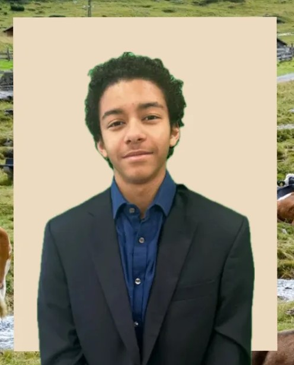
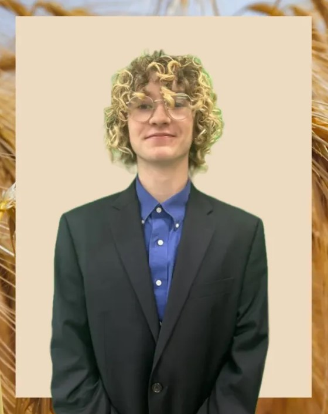

Agristrive began as a super far fetched Idea, an Idea that nobody on the team
thought we were going to be able to accomplish. Luckily, we were wrong. Over the span of weeks, months,
and days, even devoting hours upon hours outside of school, we learned how to code in JavaScript, css,
and HTML. At Powell High School, we have a class period called "Pawstime" (Because we are the Panthers)
where we do clubs and interest groups. This period lasts only about 30 minutes, and so during a school
week we had about 30 minutes a day to communicate face to face before going home and working on the
project on our personal computers. Even with the small amount of time to work and communicate, we still
put all of our effort towards making this small idea become a huge reality, and we personally feel that
if we had more experienced developers, or gain more experience ourselves in the field of coding, that Agristrive
could become something.
When we first recieved the criteria for the app, we immediately got to brain storming about what the app will be.
We wanted to create the best agriculture app that would help farmers and their farms at all levels, from plantation to home garden, strive.
That is when we develeped our name and motto. "Agristrive: Strive for Quality, Harvest Excellence". Even through our ups and downs, we continued
to stay true to our motto. We Strived for Quality, dedicating countless hours of our own free time towards development of this app, and when it was all said and done, we had Harvested Excellence.
Webdesigner

Programmer

Graphics Designer